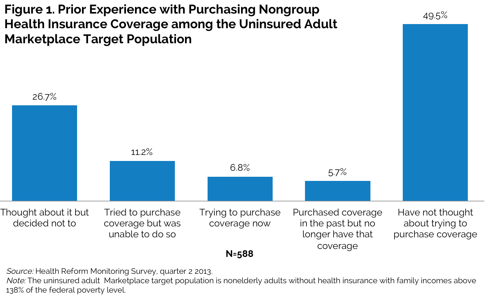

|
|||||||||||||||||||||||||||||||||||||||||||||||||||||||||||||||||||||||||||||||||||||||||||||||||||||||||||||||||||||||
How the Currently Uninsured Perceive the Cost and Affordability of Health Insurance Coverage
Fredric Blavin, Katherine Hempstead, Michael Karpman, and Ariel Fogel
As the Patient Protection and Affordable Care Act (ACA) takes full effect in January 2014, millions of uninsured adults under age 65 will gain access to new health insurance coverage options (some of them subsidized) through the Marketplaces and expanded Medicaid eligibility.1 The ACA is estimated to reduce the number of uninsured by 14 million in 2014, 20 million in 2015, and 25 million in 2016 (Congressional Budget Office 2013). Over 12 million currently uninsured Americans could be eligible for subsidies in the Marketplaces when the ACA is fully implemented.2
The Marketplaces specifically target nonelderly adults with incomes above the national Medicaid-eligibility cutoff (138 percent of the federal poverty level, or FPL) who are currently uninsured or are purchasing individual coverage (the adult target population). Thus, how well this population understands health insurance plans, and its willingness to tackle the challenges of plan selection, will largely determine the ACA’s enrollment success. These challenges range from demonstrating income eligibility and citizenship status to comparing premium, benefit, cost-sharing, and provider network alternatives. Selection and enrollment may be particularly demanding for uninsured adults who have no previous experience with, or negative impressions of, shopping for nongroup coverage.
In this brief, we focus on the prior nongroup market experience of the currently uninsured adult Marketplace target population, to assess how their perceptions of coverage cost and affordability are likely to influence the ACA’s success in reaching its enrollment targets.
Focus of the Analysis
This analysis draws on data collected in June–July 2013 from the Health Reform Monitoring Survey (HRMS) using a sample of nonelderly adults age 18–64. We focus here on the responses of the uninsured adults in the Marketplace target population with incomes above 138 percent of FPL to better understand how they think about the nongroup market. Family incomes are defined based on the “health insurance unit,” which includes respondents, their spouses, and any children or stepchildren under age 19 living with them. (Because of the limited sample size, we are unable to provide separate estimates for the uninsured population with family incomes above 400 percent of FPL.)
The results are based on HRMS questions relating to previous experience with and knowledge of the pre-ACA nongroup health insurance market. All HRMS respondents who did not have nongroup coverage were asked whether they had ever considered purchasing, tried to purchase, or actually purchased health insurance in the nongroup market. The same respondents were also asked to estimate the monthly cost of nongroup coverage in 2013 (not counting ACA Marketplace subsidies), how easy it would be for them to afford health insurance, and how much they think they could pay per month to purchase individual coverage. Respondents without insurance who had considered purchasing coverage were also asked to provide the main reason they did not currently have nongroup coverage.
What We Found
Approximately half of the uninsured adult Marketplace target population has no prior experience with the nongroup market; only a minimal share has ever had nongroup coverage. About half (49.5 percent) say they have never even considered directly purchasing coverage for themselves (figure 1). Only 5.7 percent have actually enrolled in nongroup health insurance in the past, 6.8 percent say they are currently trying to purchase nongroup insurance, 11.2 percent have tried unsuccessfully to purchase such coverage in the past, and 26.7 percent say they had considered purchasing nongroup coverage but decided not to.
Cost is the most frequently identified barrier. Nearly two out of three (62.6 percent) of the uninsured adult Marketplace target population who have considered or tried purchasing nongroup coverage give affordability as the main reason they did not ultimately purchase coverage (figure 2). Other important reasons include difficulty purchasing coverage or not knowing how (12.1 percent), being turned down by the insurance company (5.5 percent), and insufficient benefits (4.5 percent).  Respondents reportedly know little about the actual cost of nongroup insurance. Many say they do not know how much it costs to purchase coverage in the pre-ACA market. Among those able to estimate the cost, responses range widely. About half (49.0 percent) are unsure of the monthly cost of purchasing coverage directly from an insurance company. Not surprisingly, those with prior experience with the nongroup market—the 50.5 percent shown in the lower four bars in figure 1—are half as likely to be unsure of the cost than those with no such prior experience, defined as those who have not thought about trying to purchase coverage (32.8 percent versus 66.1 percent).
Only 51.0 percent of the uninsured target population provided a cost estimate. Approximately 7.4 percent estimate the cost of nongroup coverage is less than $100 a month ($1,200 annually) and 16.6 percent estimate the cost is between $100 and $249 a month (table 1). In contrast, 27.0 percent estimate the monthly cost as $250 ($3,000 annually) or more. Perhaps surprisingly, averaging these estimates into an average single premium—$327 a month or $3,919 annually—yields a reasonable estimate of the nongroup insurance premiums actually available before the ACA.3 Not so surprisingly, the estimated monthly premiums are higher, and plausibly more realistic, among those with prior nongroup market experience ($359 a month, on average) than among those with no prior experience who have never considered trying to purchase coverage ($262 per month, on average).
Half of the uninsured adult target Marketplace population is unsure of its ability to pay for nongroup coverage in the pre-ACA market but thinks that affording coverage would be difficult. Half (50.2 percent) are unsure how much they would be able to pay monthly to purchase coverage directly from an insurance company; 12.1 percent estimate that they could pay less than $25 ($300 annually), 17.7 percent estimate that they could pay $25–$74, and 9.5 percent that they could pay $75–$124. Only 10.5 percent estimate that they could pay $125 or more a month ($1,500 annually).
Among those providing an estimate, the self-reported ability-to-pay estimates for nongroup coverage are quite low, averaging $84 a month ($1,007 annually). These estimates are also higher among those with prior experience with the nongroup market ($100 a month on average) than among those with no prior experience who have not considered trying to purchase coverage ($49 a month on average).
Although most are unsure what they could actually pay for nongroup coverage, the vast majority believe it would be financially difficult for them to pay for coverage. About 83.8 percent of the uninsured adult Marketplace target population say that it would not be too easy (33.0 percent) or not easy at all (50.8 percent) to afford nongroup coverage—consistent with the findings in figure 2.
What It Means
Uninsured adults have relatively little prior experience with the nongroup market, largely because they perceive the products on the nongroup market as unaffordable. Most respondents do not know how much nongroup premiums cost, or even how much they could afford to pay for coverage. Those who gave cost estimates provided premium prices that, though varying widely, on average reflect those prevailing in the nongroup market before the ACA; these estimates are also considerably higher than respondents’ estimates of their own ability to pay. Perceptions of cost and affordability are only slightly more optimistic among those who have previously considered purchasing nongroup coverage than among those who have not.
Thus, the key challenge of ACA outreach and enrollment efforts is to convince these target populations that the Marketplaces have improved access to nongroup coverage, as well as the benefits now available and their affordability—particularly for those who qualify for subsidies.
References
America’s Health Insurance Plans (AHIP). 2009. Individual Health Insurance 2009: A Comprehensive Survey of Premiums, Availability, and Benefits. Washington, DC: AHIP.
Buettgens, Matthew, Genevieve M. Kenney, Hannah Recht, and Victoria Lynch. 2013. “Eligibility for Assistance and Projected Changes in Coverage under the ACA: Variation across States.” Washington, DC: The Urban Institute.
Congressional Budget Office (CBO). 2013. “Effects on Health Insurance and the Federal Budget for the Insurance Coverage Provisions in the Affordable Care Act–May 2013 Baseline.” Washington, DC: CBO.
About the Series
This brief is part of a series drawing on the Health Reform Monitoring Survey (HRMS), a quarterly survey of the nonelderly population that is exploring the value of cutting-edge Internet-based survey methods to monitor the Affordable Care Act (ACA) before data from federal government surveys are available. The briefs provide information on health insurance coverage, access to and use of health care, health care affordability, and self-reported health status, as well as timely data on important implementation issues under the ACA. Funding for the core HRMS is provided by the Robert Wood Johnson Foundation, the Ford Foundation, and the Urban Institute.
For more information on the HRMS and for other briefs in this series, visit www.urban.org/hrms
About the Authors
Fredric Blavin is a senior research associate in the Urban Institute’s Health Policy Center. Katherine Hempstead is a team director and senior program officer at the Robert Wood Johnson Foundation. Michael Karpman and Ariel Fogel are research associates in the Urban Institute’s Health Policy Center.
The authors gratefully acknowledge the suggestions and assistance of Linda J. Blumberg, Sharon K. Long, Genevieve M. Kenney, and Felicity Skidmore.
Note 1 States can choose to expand Medicaid to adults with incomes up to 138 percent of the federal poverty level. 2 These estimates take into account each state’s decision on expanding Medicaid as of September 2013; at that time, 24 states and the District of Columbia were committed to expand Medicaid under the ACA. See Buettgens et al. (2013). 3 For example, a 2009 report from America’s Health Insurance Plans (AHIP), based on information from member companies, reported an average annual premium of approximately $3,000 for single coverage. |
|||||||||||||||||||||||||||||||||||||||||||||||||||||||||||||||||||||||||||||||||||||||||||||||||||||||||||||||||||||||

 |
 |
 |